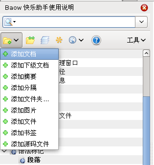
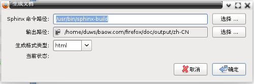

|
|
English 简体中文 |
快速安装步骤 :
- 安装 Firefox 浏览器 。
- 安装 baow 扩展。
如果你想生成网页文件，则还需要安装 Sphinx 工具：
快速开始 :
打开 Firefox 浏览器, 选择菜单 Baow ‣ 在侧栏显示
从左侧栏选择菜单 添加文档 ， 然后在弹出的对话框中输入文档标题，然后在右边新弹出的编辑器当中输入文字， 最后点击下边的 保存 按钮。

从左侧栏当中点击按钮
。
选择 Sphinx 命令的路径，并选择文档输出的路径，最后点击 确定 。 Windows 当中 sphinx的路径一般为:
C:\Python27\Scripts\sphinx-build.exeLinux, BSD 等等系统中的路径一般为
/usr/bin/sphinx-build
好了， 开始生成 ，等一会，自动打开显示生成结果。 如果你想充分使用Baow的强大功能，应该建立项目，并进行详细的配置。方法是点击项目管理按钮
，然后进行设置，这才真正开始编写正规的文档。